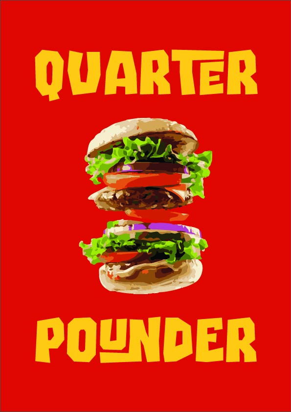
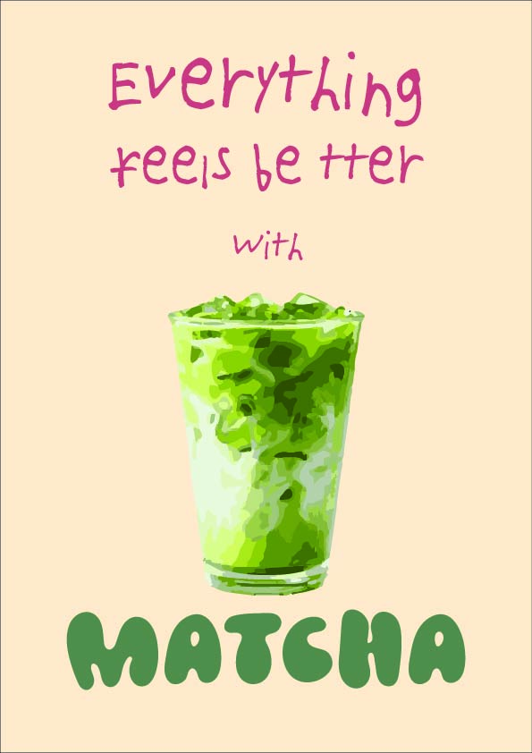
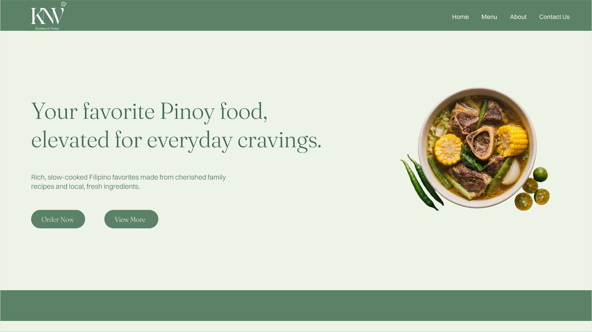
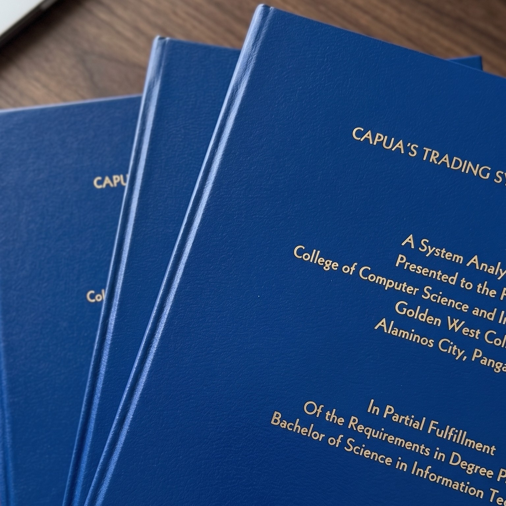
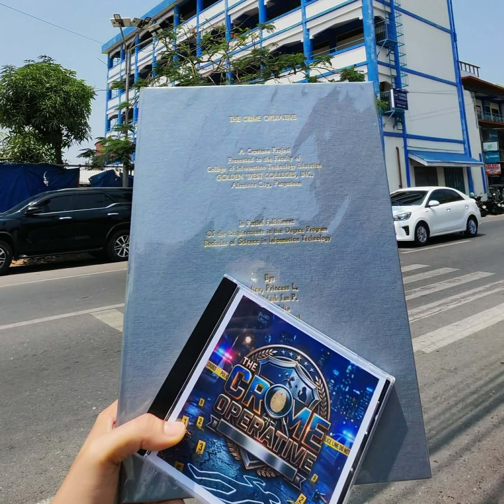

Projects
Here are some selected projects created on my own using Figma and Adobe Illustrator.


Website Project

Capstone Projects

Capua’s Trading Point of Sale System is a computer program made for a hardware store to replace paper notebooks. It speeds up daily sales, prevents human errors, and automatically tracks stock levels in real-time.

A 3D mobile simulation game designed for Criminology students to practice crime-solving on their phones. Players explore virtual crime scenes, gather clues, examine autopsy reports, and follow real police procedures to arrest the correct suspect before tim e runs out.